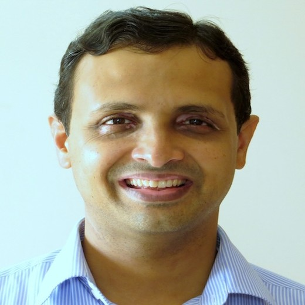

Proposed MICCAI 2026 satellite event
30-40
expected submissions
2 tracks
proceedings + non-archival
15-20
poster presentations
1 keynote
plus oral spotlights and demos
Mechanistic Interpretability for Medical Foundation Models
MI4MedFM is a half-day, in-person workshop proposal focused on opening medical foundation models: what features they encode, which circuits drive behavior, and how mechanistic insight can improve robustness, fairness, and monitoring for clinical deployment.
Medical imaging and multimodal clinical foundation models
Focused on vision, image-text, report generation, retrieval, and clinical multimodal pipelines.
MICCAI researchers, clinicians, safety researchers, and industry teams
Built to connect interpretability experts with people deploying or evaluating MedFMs in practice.
Keynote, selected orals, poster/demo discussion, networking, and closing roadmap
A compact satellite-event format optimized for focused exchange, not passive listening.
Why MICCAI
Designed for the way MICCAI workshops are evaluated and experienced
This proposal is intentionally framed as a focused MICCAI satellite event: strong scientific scope, practical clinical relevance, rigorous review planning, and clear regional fit for Abu Dhabi 2026.
Scientific fit
Directly relevant to MICCAI’s core technical and translational agenda
MI4MedFM lives at the overlap of medical image computing, multimodal clinical AI, and trustworthy model understanding. It is not a generic explainability event; it is a workshop about opening the black box of MedFMs for clinical translation.
- Medical vision, diffusion, and image-text foundation models
- Mechanistic analysis beyond post-hoc saliency and attribution
- Robustness, bias, calibration, uncertainty, and deployment monitoring
Event design
A compact format that matches how MICCAI satellite events work best
The proposed workshop is a focused half-day forum with one keynote, two oral blocks, a poster/demo discussion slot, networking time, and a closing synthesis. The structure favors concentrated exchange over fragmented programming.
- Single-topic depth around mechanistic interpretability for MedFMs
- High interaction through posters, demos, and guided discussion
- Poster-first presentation model with selected oral spotlights
Quality control
Clear review rigor and dissemination plan from the start
The proposal uses a two-track submission model with double-blind OpenReview-based review, conflict-of-interest safeguards, public abstracts for accepted work, and optional LNCS proceedings for the archival track.
- Proceedings and non-archival tracks serve different contribution types
- Meta-review oversight supports consistency and decision quality
- All accepted work is visible in posters; strongest pieces receive oral time
Regional opportunity
Strong local feasibility and a timely regional story for MICCAI 2026
With MICCAI 2026 hosted in Abu Dhabi and multiple organizers based in UAE institutions, the workshop can support on-site execution, engage regional clinicians and labs, and widen participation from the Middle East and neighboring research communities.
- Strong UAE-based organizer presence for local coordination
- Natural opportunity for MENA community growth
- Regional clinical and industry engagement aligned with translation
Oct 4
MICCAI satellite events
Oct 5-7
Main MICCAI conference
Oct 8
MICCAI satellite events
Workshop explorer
Interactive walkthrough of the five workshop pillars
Click each pillar to see what it means scientifically, how it translates to medical AI, and what participants should expect to learn or contribute.
Goal 1
Who joins
Medical imaging researchers, clinician-facing multimodal AI teams, interpretability experts, and industry practitioners.
What gets discussed
Mechanisms, failure modes, evaluation standards, and intervention strategies for MedFMs.
Why MICCAI benefits
It connects one of the fastest-moving ML subfields directly to clinical translation questions.
Bridge mechanistic ML, medical imaging, and clinical deployment communities
Mechanistic interpretability is moving quickly, but much of that momentum sits outside medical AI venues. MI4MedFM creates a common room where MICCAI researchers, clinicians, safety researchers, and practitioners can work on the same deployment problem.
Medical imaging
Clinical AI
Interpretability
Trustworthy deployment
Goal 2
Internal objects
Weights, activations, attention patterns, sparse features, and multimodal representations.
Methods in scope
SAEs, dictionary learning, circuit discovery, causal tracing, activation patching, steering, and weight-space analyses.
Expected contributions
New methods, applied mechanistic studies, tooling, benchmarks, and clinically meaningful case analyses.
Push state-of-the-art mechanistic methods into medical foundation models
The workshop centers methods that analyze weights, activations, features, and circuits rather than only outputs. The point is to understand how MedFMs compute and where those computations break in clinical settings.
Circuits
SAEs
Causal tracing
Representation steering
Goal 3
What is evaluated
Whether discovered features and circuits generalize, transfer, and align with trusted clinical concepts.
How it is tested
Controlled datasets, synthetic model-organism tasks, concept-level probes, and performance under shift.
What readers learn
How to judge if a mechanistic claim is faithful, useful, and reproducible rather than only plausible-looking.
Replace weak interpretability claims with clinically grounded validation
A mechanistic explanation is only useful if it can be tested. MI4MedFM prioritizes evaluation paradigms that link internal discoveries to medical concepts, robust behavior, and clinically relevant downstream evidence.
Faithfulness
Concept alignment
Robustness
Reproducibility
Goal 4
Failure modes targeted
Shortcut learning, domain-shift brittleness, hallucinations, calibration errors, and spurious correlations.
Intervention forms
Model editing, feature steering, detector design, selective abstention, and monitoring of unsafe states.
Clinical payoff
More actionable routes to improve safety and reliability than explanation alone can provide.
Use mechanistic insight to change model behavior, not only describe it
The workshop treats interpretability as an intervention tool. Understanding internal computations should support editing, debiasing, privacy-aware adaptation, uncertainty calibration, and inference-time monitoring for clinical safety.
Editing
Debiasing
Calibration
Monitoring
Goal 5
For researchers
Starter resources that make mechanistic analysis more practical on MedFMs.
For reviewers and organizers
A sharper picture of open questions, datasets, and evaluation practices that deserve attention.
For MICCAI
A new interpretability sub-community with tangible outputs rather than a one-off discussion.
Leave reusable community artifacts behind after the event
MI4MedFM is not only a presentation venue. The plan is to create resources that help the field continue after the workshop day: practical notebooks, baseline references, a curated open-problems list, and a short community report.
Open notebooks
Baselines
Open problems
Community report
Interactive topic atlas
Click a topic to see the research question, clinical relevance, and expected methods
The workshop scope is intentionally broad across analysis, validation, debugging, intervention, deployment, and tooling for medical foundation models.
Topic focus
Medical foundation-model architectures
The workshop covers the models that now matter most at MICCAI: medical vision transformers, diffusion models, and multimodal image-text or clinical foundation models.
Topic focus
Sparse feature discovery and SAEs
One of the clearest routes to mechanistic understanding is to identify sparse, reusable internal features that correspond to anatomy, pathology, protocol artifacts, or shortcut cues.
Topic focus
Circuits, shortcuts, and causal tracing
Rather than asking where attention was high, this topic asks which internal pathways causally produce correct predictions, harmful shortcuts, or sensitivity to domain shift.
Topic focus
Faithfulness and clinical meaning
Mechanistic results must be validated, not only visualized. This topic emphasizes how to benchmark explanations against trusted concepts, controlled tasks, and downstream clinical evidence.
Topic focus
Failure tracing and mechanistic debugging
Some of the most valuable work will explain why models fail: hallucinations in report generation, calibration mistakes, spurious correlations, and brittle multimodal reasoning.
Topic focus
Mechanistic model editing, steering, and debiasing
Once internal mechanisms are identified, the next step is intervention: change the behavior without retraining the entire model, or introduce targeted controls that improve robustness and fairness.
Topic focus
Monitoring unsafe states and distribution shift
The deployment question is central: can internal signals warn us when a model is operating outside safe conditions, encountering novel shift, or about to produce low-trust outputs?
Topic focus
Scalable open-source tooling for MedFM interpretability
Even strong methods will stall if they are too hard to reproduce. The workshop explicitly welcomes tooling that makes mechanistic analysis faster, cheaper, and more usable for the broader MICCAI community.
Program
A half-day flow built for depth, interaction, and synthesis
Select a time block to see what happens in the room and why that segment matters to the workshop’s overall objective.
Opening remarks: make the workshop question explicit
The opening aligns the room on why mechanistic interpretability is a different question from classic post-hoc explanation, and why that distinction matters for MedFMs at MICCAI.
Keynote + Q&A: connect trustworthy AI with medical deployment
The keynote anchors the workshop in high-level scientific direction: trustworthy AI, multimodal reasoning, robustness, and the broader agenda of making foundation models dependable in medicine.
Networking break: make the workshop interdisciplinary in practice
The workshop is explicitly designed for exchange across communities. Early networking helps clinicians, researchers, and tooling builders connect before contributed sessions begin.
Oral session 1: spotlight strong mechanistic contributions
Short contributed talks surface the most compelling submissions while keeping the overall event fast and discussion-oriented. The oral blocks are designed as curated spotlights, not long monologues.
Short break: keep the pace high and the format human
Small breaks matter in a half-day workshop. They preserve attention, create natural transitions, and give participants time to identify which demos or posters they most want to discuss.
Poster + demo session: where the workshop becomes collaborative
This is the core interaction block. Posters and demos make it easier to compare methods, challenge mechanistic claims, and discuss datasets, tooling, and evaluation details that do not fit into short talks.
Second break: regroup before the final technical block
A short reset after posters keeps the second oral session energized and helps the room refocus on the strongest technical themes that emerged.
Oral session 2: complete the scientific picture
The second oral block lets the workshop balance methods, validation, interventions, and tooling so the program reflects the full workshop scope.
Closing remarks: turn the day into a roadmap
The closing block summarizes the strongest themes, recognizes standout work, and points participants toward the notebooks, benchmarks, open problems, and next steps the workshop aims to leave behind.
Keynote direction
Planned keynote candidates aligned with trustworthy and multimodal clinical AI
The proposal aims to invite one keynote speaker from the following profiles. Positioning the workshop around trustworthy AI, multimodality, and clinical deployment keeps the keynote tightly aligned with MICCAI priorities.

Planned keynote candidate
Karim Lekadir
ICREA Research Professor, University of Barcelona
Research focus includes trustworthy and ethical AI for medicine, with emphasis on robustness, bias and fairness, uncertainty, and clinically reliable translation.

Planned keynote candidate
Vineeth N. Balasubramanian
Professor, IIT Hyderabad · Principal Researcher, Microsoft Research India
Research spans deep learning and computer vision, with emphasis on multimodal learning, reasoning, and explainable or trustworthy AI.
Organizing team
Strong local presence with faculty, postdoctoral, and PhD representation
The team spans career stages and institutions in the UAE and the UK, with strong local presence in Abu Dhabi/UAE to support on-site execution, regional outreach, and continuity after the event.
12 organizers
Majority based in UAE institutions
Faculty + postdoc + PhD representation

Faculty
Mohammad Yaqub
Associate Professor
MBZUAI
Faculty
Muhammad Haris
Assistant Professor
MBZUAI
Faculty
Muhammad Bilal
Professor
Birmingham City University
Faculty
Dwarikanath Mahapatra
Assistant Professor
Khalifa University
Faculty
Imran Razzak
Associate Professor
MBZUAI
Faculty
Yutong Xie
Assistant Professor
MBZUAI
PhD student
Rishabh Lalla
Ph.D. Student
MBZUAI
PhD student
Ufaq Khan
Ph.D. Student
MBZUAI
PhD student
Umair Nawaz
Ph.D. Student
MBZUAI
PhD student
Namrah Rehman
Ph.D. Student
MBZUAI
PhD student
Satyajit Kishore Tourani
Ph.D. Student
MBZUAI
Postdoctoral
Tausifa Jan Saleem
Postdoctoral Associate
MBZUAI
Submission and review
Two-track submission with a clear, rigorous review path
The review plan is intentionally easy to understand at a glance: two submission tracks, double-blind OpenReview-based review, poster-first presentation, and oral selections for standout work.
Proceedings track
Original work intended for the MICCAI Satellite Events joint Springer LNCS proceedings.
Non-archival track
Extended abstracts, previously published work, or work under review elsewhere.
Community outputs
Resources intended to outlive the workshop day
MI4MedFM is positioned as a catalyst for a lasting MICCAI sub-community around mechanistic interpretability for MedFMs.
Open notebooks and baselines
Practical starting points for applying mechanistic interpretability methods to MedFMs.
Curated open problems and datasets
A community list of priority gaps, candidate benchmarks, and clinically grounded evaluation settings.
Post-workshop report
A short synthesis of open questions, recommended benchmarks, and community next steps.
FAQ
Quick answers for readers, attendees, and prospective authors
Who should attend MI4MedFM?
Researchers in medical imaging and clinical AI, clinicians, interpretability and safety researchers, and industry practitioners working with medical foundation models.
What makes this workshop different from standard XAI or MedFM events?
Its emphasis is on internal mechanisms, causal analysis, clinically grounded validation, and intervention-ready insight rather than only post-hoc explanation or benchmark performance.
What kinds of submissions fit?
Original proceedings-track papers, as well as non-archival extended abstracts, previously published work, or work currently under review elsewhere.
How will accepted work be presented?
All accepted work will appear as posters, with a subset selected for oral presentation based on review quality and topic balance.